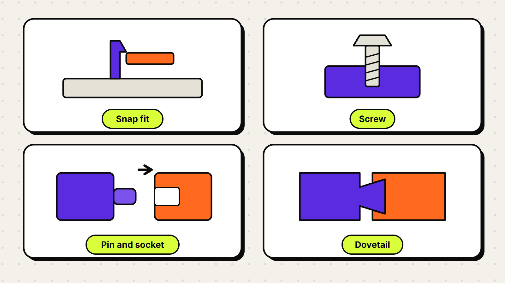
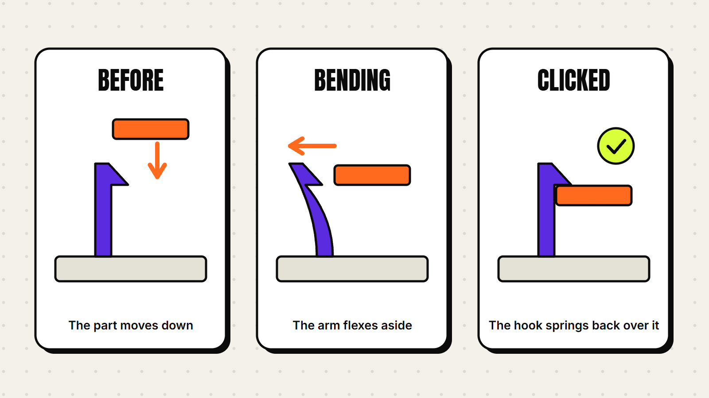

Many useful objects are made of more than one piece: a box and lid, a bracket and clamp, a stand that folds flat. 3D printing lets you design the joint into the parts themselves. A good joint holds firmly, survives repeated use, and can be assembled without a fight. This guide covers the common options and how to size them for printed plastic.
Ask four questions before choosing a joint. Will it be opened often? How much force will it take? Must it come apart for cleaning or repair? Should the joint be visible? The answers point to different solutions.
| Joint | Good for | Watch out for |
|---|---|---|
| Snap fit | Lids and covers opened sometimes | Fatigue and cracking if the arm is too stiff |
| Screws into plastic | Fixed assemblies | Stripping if overtightened |
| Heat-set inserts | Parts opened many times | Needs thick walls and a hot tool |
| Captive nut | Strong metal thread | Needs a pocket in the design |
| Pins and sockets | Locating parts before gluing | Tight fits that will not seat |
| Dovetail or slide | Panels and modular systems | Needs correct clearance |
| Print-in-place hinge | Moving parts printed assembled | Fusing together if the gap is small |

A snap fit uses a flexible arm with a small hook that clicks over a ledge. The arm bends during assembly and springs back. Longer, gently tapered arms bend more easily and last longer than short thick ones. Round the base of the arm to avoid a stress crack, and print so the layers run along the arm, not across it. PETG usually tolerates repeated flexing better than plain PLA.

Self-tapping screws can cut their own thread into a printed pilot hole. Make the hole slightly smaller than the screw's outer width, surround it with plenty of wall, and tighten gently. A screw head sitting in a recess looks neat and protects fingers. For parts opened repeatedly, use metal threaded inserts or a captive nut so the plastic thread does not wear out.
Large threads, such as jar lids, print reasonably well. Small threads are fragile and often rough. Below roughly 6 mm, metal hardware is usually the better choice.
When a large model is split, small pins or keyed shapes help pieces line up exactly. Give pins a slight taper or chamfer so they find their holes. Dovetails slide together and resist pulling apart, useful for modular trays and display systems.
Printed parts need a gap to fit. As a starting point, allow about 0.1 to 0.2 mm on each side for a tight press fit, 0.2 to 0.3 mm for a sliding fit, and 0.4 mm or more between parts printed already assembled. Machines differ, so print a small test of the joint before the full part. See designing for print.
Glue is simple and strong for parts that never need to come apart. Combine it with pins so alignment stays accurate. Our guide to gluing prints covers adhesives.
Tip: Tell the printer which screws you plan to use, or send one along. Holes designed around the actual hardware fit first time more often.
Most of these show up in the first test print, which is why a small trial of the joint is worth the effort. Adjust one dimension at a time, label each test piece with its gap, and keep the winner for reference. That small habit builds a personal table of fits that works for your material and printer, and saves guesswork on the next project.
It varies with material, arm length, and how far it bends. If it must open very often, screws with inserts or magnets in pockets may serve better.
Yes, slowly and with light pressure, so friction does not melt the plastic. Printing the hole slightly small and drilling to size gives a clean result.
Small magnets fit neatly into designed pockets and make smooth lids. Keep them away from young children, since swallowed magnets are dangerous.
A joint that comes apart without damage lets someone replace one worn piece instead of the whole object. Screws, captive nuts, and slide fits help with that, while glue locks parts together for good. If a lid or clip is likely to wear first, make it a separate piece so it can be printed again on its own.
If you have parts that must fit together, describe them in the quote form, or let our design service model the joint for you.